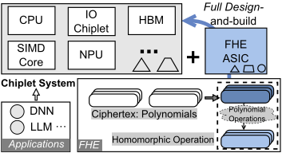
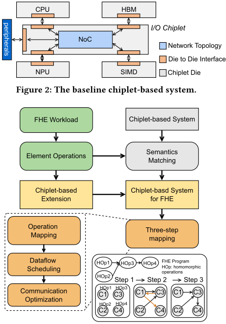
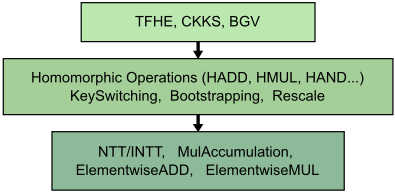
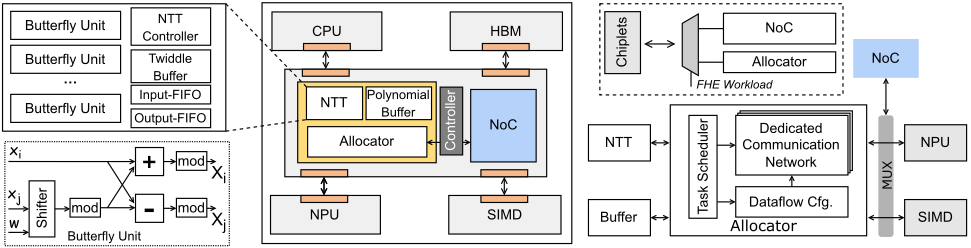
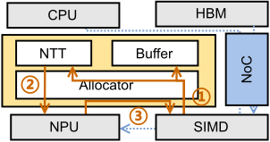
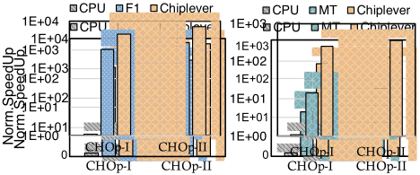
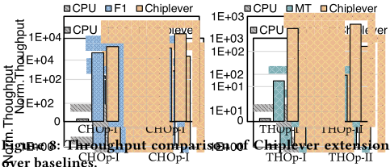
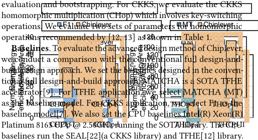
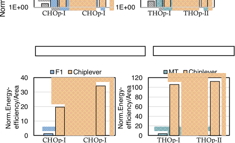

ChipLever：面向 FHE 的 Chiplet 系统无感（Effortless）扩展框架
未为 FHE 定制的 chiplet 系统难以高效支持全同态加密的多项式运算，而常规 full design-and-build 方式需重新设计专用加速器，忽视系统内已有资源并造成重复定制与面积浪费。ChipLever 提出无感扩展框架：先用语义匹配将 FHE 程序（TFHE/CKKS）中的通用操作映射到系统已有的 NPU、SIMD 等 DSA chiplet，仅对 NTT 等缺失的特殊操作在 I/O chiplet 内做最小硬件扩展。扩展包含可配置 butterfly 单元的 NTT 模块、512KB polynomial buffer 与解耦 Allocator（任务调度器、专用点对点通信网络、数据流配置单元），不改变原 NoC 拓扑与通信行为，实现透明集成；再以三步映射提供编译级到硬件级支持并优化数据通信。实验基于 TSMC 14nm、1GHz 综合的 RTL（总面积 108.8 mm²）与 cycle-accurate 仿真器，CKKS/TFHE 负载平均取得相对 CPU 2681.3×、相对 F1 3.6×、相对 MT 18.2× 加速，面积归一化能效相对 F1/MT 提升 27.0×/108.8×。
基于 LWE/RLWE 的 FHE 以多项式运算表示密文计算，涉及 NTT、bootstrapping、key-switching 等复杂操作，硬件资源需求极大。未为 FHE 定制的 chiplet 系统（主要集成面向深度学习等应用的 DSA chiplet）既无法用现有编译器卸载 FHE 程序，也无法高效支持 NTT 等特殊操作。常规做法是 full design-and-build 一颗新的专用 FHE 加速器，但这忽视了系统内已有的计算与存储资源，造成功能重叠的重复定制与资源浪费（论文引用的专用 FHE 加速器面积最高可达 472 mm²），且设计流程长、工作量大的问题。
ChipLever 包含三部分：(1) 语义匹配——用编译 pass 对 FHE 程序做自顶向下的层次化分析提取原语操作，将乘加、element-wise 等与已有 chiplet 语义相同的通用操作映射到 NPU/SIMD，同时识别出 NTT 等无法匹配的特殊操作；(2) I/O chiplet 内扩展——含可配置 butterfly 单元的 NTT 模块（(log N) 级流水，twiddle factor 为 2 的幂可用移位实现乘法）、用于中间结果复用的 polynomial buffer，以及解耦 Allocator（任务调度器 + 专用点对点通信网络 + 数据流配置单元），将 FHE 数据流管理与原 NoC/控制器解耦，不改变原拓扑与路由行为，实现透明集成；(3) 三步映射——提供编译级到硬件级支持，以 CKKS key-switching 为例对 SIMD/NTT/NPU 做流水调度，并借 polynomial buffer 直接读取中间数据、避免读写 DRAM。
性能：平均相对 CPU 加速 2681.3×，相对 F1 加速 3.6×，相对 MT 加速 18.2×（对比时将扩展缩放到与基线相同面积）
吞吐（operations per second）：论文报告平均 4825.5×、3.4×、29.5× 提升（原文基线仅写 F1 与 MT，数字个数与所列基线不一致）
扩展电路在 TSMC 14nm、1GHz 下总面积 108.8 mm²（配置为 64 个 butterfly 单元、每个执行 128-element NTT，512KB polynomial buffer）
面积归一化能效：平均相对 F1 27.0×、相对 MT 108.8×
与 full design-and-build 的专用 FHE 加速器（含已有的 chiplet-based FHE 加速器）不同，ChipLever 不重新设计功能重叠的硬件，而是通过语义匹配最大化复用系统中已有 DSA chiplet，只在 I/O chiplet 内为特殊操作（NTT）添加必要扩展，并用解耦 Allocator 保证对原 NoC 拓扑与通信行为透明，配合编译级三步映射完成 workload 分配与通信优化，实现即插即用式的系统扩展而非整颗新 ASIC。
相关度级别：high
命中能力域：2.1 IP 架构与微架构 | 2.2 RTL 设计与实现
理由：论文核心直接命中 2.1 明确列出的 chiplet/多 die 集成架构：在 I/O chiplet 内做功能扩展、通过解耦 Allocator 保持原 NoC 拓扑与通信行为不变、基于 interposer 的 die-to-die 互连与 HBM3 的系统建模、面向 PPA（面积/能效）的架构权衡与 workload 驱动的操作映射，均与团队 chiplet 集成架构和互连 IP 工作直接相关；同时论文给出扩展的 Verilog RTL 及 Design Compiler @ TSMC 14nm 综合结果，与 2.2 的可综合 RTL 设计/逻辑综合有浅层交集。但 FHE 应用本身不属于团队存储/互连 IP 产品线，价值主要在架构方法学（透明扩展、解耦调度、workload-driven 映射与评估流程）而非具体加密电路。
建议动作：深入精读并做内部分享
Yibo Du 1,3 , Ying Wang 1,3 , Bing Li 4 , Fuping Li 2,3 Shengwen Liang 2,3 , Huawei Li 2,3 , Xiaowei Li 2,3 和 Yinhe Han 1,3 {duyibo21s, wangying2009, lifuping20s, liangshengwen, lihuawei, lxw, yinhes}@ict.ac.cn, bing.li@cnu.edu.cn 1 CICS，中国科学院计算技术研究所，中国北京 2 SKLP，中国科学院计算技术研究所，中国北京 3 中国科学院大学，中国北京 4 首都师范大学，中国北京
全同态加密（Fully Homomorphic Encryption, FHE）是最有前景的隐私保护技术之一，因其理想的安全性而日益受到学术界和工业界的关注。基于 Chiplet 的设计将多个裸片集成到封装中，从而提供高性能，因此被资源需求巨大的 FHE 所青睐。尽管基于 Chiplet 的系统拥有各种专用加速器，但在支持具有新型多项式运算的 FHE 方面仍显不足。对于并非为 FHE 量身定制的基于 Chiplet 的系统，支持 FHE 的一种常见方法是设计一个新的专用加速器。然而，这种完全重新设计构建的方法忽视了系统中已有的丰富加速器资源，并导致重复定制和资源浪费。
本文提出 Chiplever，一个能够轻松扩展基于 Chiplet 的系统以支持 FHE 的框架。我们旨在充分利用系统中的可用资源，以实现高效的 FHE。为实现这一目标，Chiplever（1）在语义匹配的指导下，在 I/O Chiplet 中引入了一种专用扩展；（2）提出了一个具有专用数据流调度的高效分配器；（3）Chiplever 提供三步映射，以实现对 FHE 从编译器级到硬件级的支持，并优化数据通信。
Fully homomorphic encryption (FHE) emerges as one of the most promising encryption techniques for its ideal security properties[1]. FHE allows the computing of encrypted data directly without decrypting it, which achieves the secure offload to an untrusted platform to harness its computing power. FHE based on LWE/RLWE[2] represents ciphertext (encrypted data) in polynomial format. There-
erations, which require massive hardware resources. Chiplet-based designs that integrate many chips into a large system can provide abundant resources and high computing power, thereby being embraced by resource-hungry applications in the post-Moore era[3-5]. For one thing, chiplet-based design enables a more efficient chiplet reuse compared with IP reuse. Reusing third-party efficient chiplets facilitates the agile high-performance design and amortizes the development costs. For another thing, driven by the diverse emerging applications, integrating various specialized processors, known as domain-specific accelerators (DSA), can deliver high energy efficiency and computing power.
Permission to make digital or hard copies of part or all of this work for personal or classroom use is granted without fee provided that copies are not made or distributed for profit or commercial advantage and that copies bear this notice and the full citation on the first page. Copyrights for third-party components of this work must be honored. For all other uses, contact the owner/author(s).
DAC '24, June 23-27, 2024, San Francisco, CA, USA
© 2024 Copyright held by the owner/author(s).
ACM ISBN 979-8-4007-0601-1/24/06.

However, despite with various and powerful specialized processors integrated, the chiplet-based system not designed for FHE that is primarily equipped chiplets catering to applications like deep learning falls short in supporting FHE with novel polynomial operations. In this era prioritizing data privacy, there arises an urgent necessity for systems with efficient capabilities for FHE[6]. Given that abundant resources exist in chiplet-based systems, it is crucial to fully harness the computing power already in the room and reuse these mature designs. Following this key philosophy, we propose a plug-and-play design that can take advantage of the available resources and empower existing system not designed for encrypted computing to seamlessly support FHE with effortless extension.
与传统的全设计构建（full design-build）方法相比，轻松扩展的设计方法展现出显著的先进性。当遇到运行全同态加密（FHE）工作负载的需求时，传统的全设计构建方法会直接定制一颗新的专用集成电路（ASIC）并将其集成到系统中，如图 1 所示。例如，[5] 提出了一种基于 Chiplet 的 FHE 加速器，旨在促进同态加密的部署。还有一些配备专用单元和数据通路的专用加速器，能够提供高效加速[7-11]。然而，这种全设计构建方法存在一些缺点。首先，它忽视了系统中现有的计算与存储资源，导致面积效率低下。配备领域专用架构（DSA）的专用 Chiplet 能够提供宝贵的能力和基础，这些是可用于 FHE 计算的潜在资产。然而，全设计构建方法重新设计了与现有 Chiplet 功能相重叠的硬件，导致重复定制和资源浪费。众所周知，FHE 对资源极为贪婪，冗余的定制会造成更严重的资源消耗。采用全设计构建方式的 FHE 加速器面积最多可达 472 mm²[11]。其次，全设计构建方法面临高得多的复杂性以及不断攀升的设计投入。设计一个全新的加速器涉及漫长的设计流程，并需要大量的精力。
为克服这些缺点，我们寻求一种能够尽可能充分利用手头现有资源的方法，以在并非为 FHE 量身定制的系统上实现高效的 FHE。为此，我们提出了一个框架，该框架引入一种轻松的基于 Chiplet 的扩展，为系统提供特定的功能。为了将对系统的改动降至最低，我们提出仅在扩展中定义系统所缺失的必要功能。然而，实现这一方法仍然存在挑战。首先，一个能够使系统支持 FHE 工作负载的高效扩展本身就是一大挑战。它需要对 FHE 的应用级与硬件级语义特征进行协同分析，以确定跨多个 Chiplet 的最优工作负载映射。其次，将扩展融入系统并协调各个 Chiplet，同时对现有 Chiplet 保持透明，也颇具挑战性。为了充分利用可用资源，各 Chiplet 被分配工作负载分区并协同工作。这需要 Chiplet 之间进行高效的数据通信。直接集成一颗新芯片可能会影响拓扑结构，进而改变数据通信行为，例如改变路由路径。为了对原有的通信模式保持透明，我们在 I/O Chiplet 中引入了具有解耦调度的扩展，从而对原始拓扑不产生任何影响。
*通讯作者为 Ying Wang 和 Yinhe Han。
在本文中，我们提出了 Chiplever，一个旨在轻松扩展基于 Chiplet 的系统的框架，使原本并非为加密计算量身定制的系统能够无缝支持全同态加密（FHE）。我们力求以最小的努力和修改实现这一目标，同时充分利用现有系统丰富而成熟的资源。Chiplever 引入了一种高效的扩展，同时涵盖功能支持与调度支持。新引入的扩展需要在 Chiplet 之间传输数据。为了保证透明性，我们提出了一个解耦的分配器，其具有面向 FHE 的专用任务调度，且不影响原有的通信行为。为了保证扩展与系统的兼容性，Chiplever 提出了三步映射，为 FHE 提供从编译器级到硬件级的支持。
本文的主要贡献如下：
全同态加密（FHE）是最有前景的隐私保护技术之一。FHE 实现了对加密数据的通用计算，使得可以直接在加密数据上进行计算而无需解密。基于 LWE/RLWE[2] 的 FHE 方案采用相同的基本密文格式：次数为 𝑁 的多项式。对加密数据的计算被称为同态操作，并表示为多项式操作。例如，两个明文之间的乘法被转换为密文多项式乘法，其复杂度为 𝑜(𝑁²)。为了优化多项式操作，当前的 FHE 实现采用数论变换（NTT）将复杂度降低至 𝑂(𝑁 log 𝑁)。
由简单明文操作加密而来的同态操作（例如同态乘法）涉及多个复杂操作。例如，FHE 方案必须周期性地调用自举（BSP）操作，因为每次 FHE 操作都不可避免地向密文中引入一定量的噪声，这可能导致解密失败。BSP 能够降低噪声，但代价高昂。在 TFHE[12] 中，BSP 涉及具有依赖关系的多项式操作循环。此外，CKKS[13] 中的多项式乘法之后需执行密钥切换（key-switching）操作，以生成在原始私钥下的密文。总而言之，FHE 中的同态操作由多个复杂操作组成。
基于 Chiplet 的设计通过硅中介层（silicon interposer）将众多小芯片集成到一个大型系统中，实现裸片间（die-to-die）连接并提供高带宽[14]。已有工作证明，这种方式能够高效地集成大量 Chiplet，切实可行[15]。因此，随着摩尔定律的放缓，基于 Chiplet 的设计受到资源需求巨大的应用的青睐。如图 2 所示，集成了各种领域专用加速器（DSA）的基于 Chiplet 的系统能够提供高能效与强大算力。I/O Chiplet 通常通过片上网络（NoC）以及面向 DDR 和各类外设的多种接口集成到系统中，以实现高效的互连与通信[16]。尽管如此，当面对 FHE 工作负载时，基于 Chiplet 的系统在支持 FHE 方面仍面临困难。FHE 工作负载无法直接卸载到 DSA 上，因为系统所配备的面向深度学习等应用的编译器无法支持 FHE 程序。此外，FHE 中的数论变换（NTT）等特殊操作，也无法从并非专门针对 FHE 定制的 DSA Chiplet 中获得高效支持。
为解决这一问题，一些工作提出了专用 FHE 加速器，其通常实现 NTT 单元和向量单元以支持 FHE 中的操作。专用 FHE 加速器被集成到系统中，专门用于卸载完整的 FHE 工作负载[5, 7, 9]。然而，这种完全自设计自建（full design-and-build）的方法忽视了利用系统中已有丰富资源的潜力。通过第 3 节中的语义匹配，我们发现某些 FHE 操作与现有 Chiplet 具有相同的语义。因此，FHE 工作负载有可能部分地由现有 Chiplet 进行加速。相比之下，完全自设计自建的方法会重复定制系统中已有的类似硬件单元，导致冗余定制和资源浪费。我们旨在提出一种轻松的扩展（effortless extension）方法，通过尽可能充分利用系统中已有的丰富资源，使原本并非为 FHE 设计的系统能够支持 FHE。
本文提出的 Chiplever 为原本并非针对全同态加密（FHE）定制的基于 Chiplet 的系统（如图 2 所示）引入了一个扩展，使其能够支持 FHE 工作负载。Chiplever 的框架如图 3 所示。Chiplever 旨在利用系统中可用的 Chiplet 以及该扩展，为 FHE 工作负载提供完整支持。为实现这一目标，Chiplever 首先进行语义分析与匹配。给定一个 FHE 工作负载，Chiplever 会分析其语义特征，为语义匹配做好准备。语义匹配过程将 FHE 工作负载中的操作与基线系统中具有相同语义的 Chiplet 进行对齐。该语义匹配过程提取出适合映射到可用 Chiplet 上的操作，这些操作被称为通用操作。语义匹配过程还会输出需要扩展提供支持的特殊操作。因此，在语义匹配的指导下，我们为扩展设计了用于处理特殊操作的专用单元。除功能支持之外，该扩展还应能在新扩展的系统上为 FHE 工作负载提供高效的调度支持。这一点至关重要，因为新集成的扩展需要与系统的现有资源协作并传输数据。为此，我们为 FHE 工作负载定制了一个解耦分配器。为了便利 FHE 工作负载并进一步优化通信，我们为扩展后的系统提供从编译器级到硬件级的支持。我们提出了一种三步映射机制。

FHE 工作负载表现出复杂的行为。与主要涉及卷积运算或向量-矩阵乘法的深度学习应用或图像信号处理不同，FHE 工作负载涉及范围更广的复杂运算。例如，自举（bootstrapping）作为 TFHE 中的主导过程，由逐元素运算和数论变换（NTT）运算的迭代构成。因此，针对 TFHE 和 CKKS 等不同的 FHE 工作负载，我们使用编译器 pass 分析程序，从中提取原语运算。如图 4 所示，Chiplever 通过自顶向下的层次化分析对运算进行抽象。随后，Chiplever 将从工作负载中提取的原语运算与 chiplet 系统中具有相同语义信息的硬件进行对齐。具体而言，该过程执行语义匹配，以检测通用运算和特殊运算。Chiplever 提取程序中与各 chiplet 具有相同语义的通用运算。例如，具有明显数据复用特征的乘法与累加等运算被分配给神经网络处理单元（NPU）。逐元素运算被分配给单指令多数据（SIMD）。语义匹配遍历程序，并匹配预定义的模式。通过这种方式，Chiplever 最优地利用系统内可用的硬件资源，并借助其特性实现高效率。

然而，FHE 中用于多项式运算的 NTT 等特殊运算在语义匹配过程中无法与现有硬件相匹配。这意味着由于其独特的特性，这些特殊的 NTT 运算无法得到现有硬件的最优支持。因此，Chiplever 通过在扩展中为这些特殊运算提供量身定制的高效支持来解决这一问题。这种方法确保 Chiplever 能够利用现有资源，并仅引入极少的额外逻辑即可提供高效支持。
基于语义匹配的结果，需要由扩展为这些特殊运算提供高效支持。除此之外，随之而来的另一个挑战是如何管理扩展与 Chiplet 之间的数据流调度。由于原有系统不支持新扩展上的数据流，我们在扩展内部引入了一个专用的分配器（Allocator），以确保透明集成，且不影响原有的通信与数据流调度。图 5 描绘了该扩展的架构。它包括 NTT 模块、Allocator 以及用于中间结果复用的多项式缓冲区。NTT 模块用于支持 FHE 中的特殊 NTT 运算。FHE 将加密数据表示为密文多项式，并涉及复杂的多项式运算。为了简化多项式运算，需要对多项式使用 NTT 和逆数论变换（INTT），这将多项式乘法的复杂度从 𝑂 ( 𝑁 2 ) 降低到 𝑂 ( 𝑁 log 𝑁 )，其中 𝑁 为多项式的次数。输入多项式经过 NTT 变换后，两个多项式的乘法在点值域中以逐元素乘法的方式执行。NTT 模块由计算 NTT 的蝶形单元实现。多项式经 NTT 进行的变换是 (log 𝑁) 级流水线。每一级均可由可配置的并行蝶形单元执行。蝶形单元如图 5 所示。输入与旋转因子相乘。由于旋转因子可以表示为 2 的幂次的值，乘法可以简化为移位操作[17]。

除了为特殊 NTT 运算提供必要的功能支持之外，扩展还应能够协调可用的芯粒（chiplet），并在新的扩展系统上管理数据流，以实现高效的 FHE。在基于芯粒的系统中，数据流受芯粒布局和片上网络（NoC）的影响。直接将新的芯粒集成到系统中可能会带来拓扑结构的修改，或改变诸如路由路径之类的通信行为。因此，我们选择扩展现有的 I/O 芯粒，并将针对 FHE 的数据流管理与原始的 NoC 和控制器解耦。这种方法确保扩展对系统是透明的。扩展被引入到 I/O 芯粒中，该 I/O 芯粒连同面向 FHE 的专用扩展一起集成到系统中。这个扩展后的 I/O 芯粒保留了所有原有功能，不改变先前的通信行为，并具备 FHE 工作负载所需的附加能力。此外，I/O 芯粒是连接各个芯粒裸片的关键桥梁。在 I/O 芯粒中添加扩展有利于扩展与其他芯粒之间的高效通信。我们在所引入的扩展中提出了一个专用分配器（allocator），以实现针对 FHE 的解耦数据流管理。它包括任务调度器、专用通信网络和数据流配置单元。任务调度器管理 FHE 工作负载中各模块之间的数据流调度。它根据运算依赖关系分配数据。例如，当 NTT 模块需要向 NPU 传输数据时，任务调度器通过专用通信网络将数据从 NTT 模块分配到 NPU。专用通信网络在模块之间提供多条点对点连接，专门用于满足 FHE 工作负载中的特殊数据通信需求。专用通信网络在数据流配置单元的控制下确定目的端和源端。我们在分配器中而非原始 NoC 中解耦数据流管理，因为原始 NoC 是通用的，并非为 FHE 数据流量身定制。此外，这种解耦有助于避免原始 NoC 中的拥塞。
Next, we introduce the compiler-level support provided by Chiplever. For the FHE workloads based on different schemes like CKKS and TFHE, we can uniformly map them to the chiplet-based system as
To better understand the scheduling, we illustrate a CKKS keyswitching example in Figure 6. For clarity, we only show the key operations. Chiplever maps the homomorphic operations to different chiplets in the system and schedules the dataflow by Allocator. In the beginning ➊ , SIMD performs the polynomial element-wise multiplications and then sends the results to NTT module. In ➋ , NTT module sends data to NPU and NPU performs multiplications of key-switching hints and input data. This process is the iterations in CKKS. The NTT and NPU are well pipelined. In ➌ , the final outputs of NPU are sent to SIMD to conduct the operations with data generated in ➊ . With the proposed communication optimization, the data generated in ➊ is stored in the Polynomial Buffer. SIMD can read the needed data from the buffer directly, which avoids writing and reading DRAM.

In this section, we evaluate the Chiplever against the conventional full design-and-build approach. We emulate the scenario that Chiplever introduces the extension and integrates it into the non-FHE-tailored chiplet-based system. While the full design-andbuild approach straightforwardly integrates a FHE accelerator. As the Chiplever workflow is proposed for general FHE, we evaluate two different representative FHE schemes, CKKS[13] and TFHE[12].
Modeled system. We implemented the synthesized RTL of the Chiplever extension in Verilog. The design is synthesized using Synopsys Design Compiler with the TSMC 14nm library, and the clock rate is set to 1 GHz. To evaluate micro-architectural behaviors of the Chiplever extension, we build a cycle-accurate simulator. The non-FHE-tailored chiplet-based system is similar to Figure 2, which has widely used NPU and SIMD chiplets besides CPU and HBM. The NPU is similar to with 16 × 1024 PEs[18][19]. The SIMD is equipped with 64 SIMD-128 cores. The HBM3[20] is adopted. The chiplets in the system are connected by the high-speed interposer[14].
Extension Configuration . The Chiplever introduces an extension as shown in Figure 5 with the configurable butterfly units. We set 64 butterfly units, with each performing 128-element NTT. We set the Polynomial buffer as 512KB for intermediate results reuse.
| FHE Scheme | Parameters | Parameters |
|---|---|---|
| CKKS | 𝑁 = 10 12 , 𝑁 = 10 14 , | Log ( Q ) = 109 Log ( Q ) = 438 |
| TFHE | 𝑛 = 500, 𝑁 | = 1024, 𝐿 = 3 |
| TFHE | 𝑛 = 630, 𝑁 | = 2048, 𝐿 = 3 |
| FHE Scheme | Parameters | Parameters |
Benchmarks . We select different FHE schemes for evaluation. TFHE and CKKS are two representative FHE schemes. TFHE is a FHE scheme that supports homomorphic Boolean algebra with the fastest bootstrapping. CKKS is a popular approximate FHE scheme. Wespecifically employed the advanced version RNS-CKKS[21] with Residue Number System (RNS) that represents a single polynomial with wide coefficients as multiple polynomials with narrower coefficients. We evaluate the performance of homomorphic operations of two FHE schemes. For TFHE, we evaluate the TFHE homomorphic NAND operation (THOp) which involves homomorphic logic over baselines.



4.2.1 Performance Comparison. We first compare the performance of the Chiplever extension with the baselines. The speedups are normalized to the software solution on CPU. As MT is not designed for CKKS, we evaluate MT on the TFHE application. Similarly, we evaluate F1 on the CKKS application. In the comparisons of each baseline, the extension is scaled to the same area as the baseline for fair comparisons. As shown in Figure 7, on average, Chiplever achieves 2681.3 × , 3.6 × , and 18.2 × speedup compared with CPU, F1, and MT respectively. With the same area consumption, Chiplever achieves higher performance. First, Chiplever conducts effective semantics matching and fully leverages the available resources of existing chipsets in the system. Second, Chiplever introduces the dedicated units in the extension to efficiently support the specific operations in FHE. Third, Chiplever fully exploits the resources in the system by aligning operations with the most suitable hardware and achieves efficient workload mapping by three-step mapping. Doing this achieves efficient acceleration for primitive operations.
4.2.2 Throughput Analysis. Toevaluate the scheduling and pipeline management proposed by Chiplever, we compare the throughput of the Chiplever extension with the baselines. We evaluate the operations per second. As shown in Figure 8, on average, Chiplever achieves 4825.5 × , 3.4 × , and 29.5 × speedup compared with F1, and MT. The main reasons are two-fold. First, Chiplever achieves an efficient acceleration by designing dedicated extensions for special operations and exploiting the available resources for general operations for FHE workloads. Second, Chiplever proposes complier-level support to achieve efficient mapping and scheduling. The three-step mapping achieves the optimized pipeline and data communications, improving the overall throughput.

4.2.3 Area-efficiency. The total area of the Chiplever extension is 108.8 mm 2 under the given configuration in Section 4.1. To evaluate the energy efficiency To evaluate the efficiency under the same area consumption, we compare the area efficiency of Chiplever with baselines by dividing the energy efficiency by the respective consumed area. As shown in Figure 9, on average, Chiplever achieves 27.0 × and 108.8 × energy efficiency compared with F1 and MT. This demonstrates that the proposed Chiplever is able to achieve efficient energy consumption compared with the conventional full-design approach. Chiplever is able to exploit the given area to boost the overall performance.
全同态加密（FHE）加速器。FHE 存在较高的计算开销，其速度通常比未加密计算慢 4 到 5 个数量级。为解决这一问题，已有许多 FHE 加速器被提出。[7, 9, 11] 提出了专用集成电路（ASIC）设计以提升计算效率。还有一些工作提出了基于现场可编程门阵列（FPGA）的加速器[8, 10]。由于 FHE 需要大量计算资源才能实现高效计算，[5] 提出了一种基于 Chiplet 的 FHE 加速器，以增强其在真实场景中的部署。
基于 Chiplet 的设计。先进封装催生了一种新的设计范式，使得许多小 Chiplet 能够被组装成一个大型系统[23, 24]。因此，基于 Chiplet 的设计受到了后摩尔时代各类应用的广泛青睐。[25] 提出了一种基于 Chiplet 的空间加速器以提升可扩展性。基于 Chiplet 的设计通过片上网络（NoC）在中介层（interposer）上集成多个芯片，并展现出良好的可扩展性。中介层能够提供高性能的裸片间（die-to-die）互连。还有一些工作提出在系统中采用专用的互连 Chiplet 或 I/O Chiplet，以提升 Chiplet 之间的通信效率[16, 26]。与传统单片（monolithic）设计相比，基于 Chiplet 的设计展现出诸多优势。
本文提出了 Chiplever，这是一个能够轻松扩展基于 Chiplet 的系统的框架，使原本并非为全同态加密（FHE）量身定制的系统能够无缝支持 FHE。除了提供专用的功能与调度支持以确保所引入扩展的透明性之外，Chiplever 还提供了编译器支持，以实现高效的 FHE 工作负载映射。这种透明的扩展抓住机会充分利用了系统中现存的可用资源，与传统的完整设计与构建方法相比，取得了显著的性能提升。
本工作得到国家自然科学基金（NSFC）项目 NSFC.62222411、62025404、92373206、62204164 的资助。